AI Academy · Level 4 · Grade 9 · Week 3 · Student lesson
Classification or Regression?
Learn to understand, design, build, test and explain AI systems responsibly.
Project: Responsible Plant Classifier
Before you start
AI-2 Week 7: a numeric data type does not determine task meaning.
Plan time to read, investigate and explain. Keep predictions separate from observations.
Student lesson · 1 of 17
Your mission
Your learning target
I can identify a task from the meaning of its target.
I can distinguish category agreement from numerical error.
I can specify outputs and checks that match a user need.
Remember before reading
Close your notes first. A rough first answer helps us choose the right starting point; it is not a score for your ability.
Without opening the old lesson, explain one key idea from Features, Labels, Targets. Give an example and a mistake that the idea helps you avoid.
After trying, check the relevant lesson or ask your teacher. Change the part of your explanation that the evidence shows was wrong.
Classification predicts a category; regression predicts a numerical quantity. The target—not the input format—determines the task type.
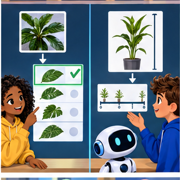
Builder name and experiment date:
Readiness for the connected explanation
At dispatch, may the observed arrival duration be used as an input to predict that same trip duration? Explain.
This week’s end goal
By the end, I can explain classification or regression? using a traced example and a stated limitation.
Student lesson · 2 of 17
Notice the evidence
PICTURE ENTRY
Notice → Predict → Explain
Begin with visible evidence; do not explain more than the picture and information support.
Name three visible details without interpreting them.
Predict the data, model, or evaluation decision being made.
Identify one hidden assumption that could change the result.
State what evidence would confirm or reject your prediction.
My prediction and supporting evidence:
A closer explanation
At robot dispatch, we can ask two questions about the same fictional trip. Will it take more than 10 minutes? Or how many minutes will it take? The first asks for a category. The second asks for an amount with units. The target question determines the task, even if both models would use the same dispatch-time inputs.
| Question | Target meaning | Task |
|---|---|---|
| Will the trip exceed 10 minutes? | 0 for no and 1 for yes | Classification |
| How long will the trip take? | Elapsed duration in minutes | Regression |
| Which route type will be used? | Indoor or outdoor | Classification |
Classification predicts a category from a defined set. Regression estimates a numerical quantity for which differences have meaning. A category may be coded with numbers: 0 and 1 here are names for no and yes, not travel times. Conversely, a duration recorded as a whole number of minutes can still be a regression target. Decimal points do not decide the task.
Keep Week 2's prediction time: route length and the saved queue may exist at dispatch, while the observed duration is available later for training or evaluation. Do not feed that observed duration into an earlier dispatch prediction.
Student lesson · 3 of 17
See how it works
ML MECHANISM
Input → Model → Evidence
Trace the information, fitted behavior, and evaluation proof separately.
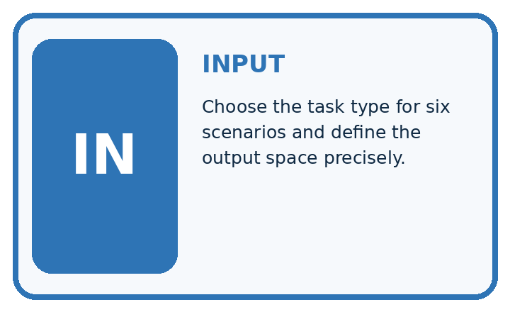
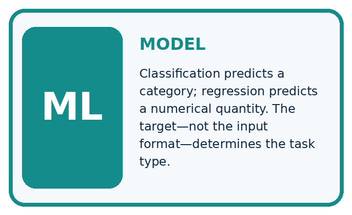
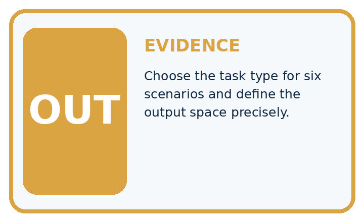
QUESTION Choose the task type for six scenarios and define the output space precisely.
MODEL IDEA Classification predicts a category; regression predicts a numerical quantity. The target—not the input format—determines the task type.
PROOF NEEDED Use an unseen case, visible calculation, error analysis, and a stated limitation.
Draw a fresh data → model → prediction → evaluation trace:
A closer explanation
The following predictions are supplied for practice; no model is fitted here. Each estimate was written before revealing its matching observed duration. We compare duration error with a category decision made from that estimate. Predict slow when the estimated duration is greater than 10 minutes; exactly 10 is not slow. A classifier could also predict categories directly, but this example uses a threshold on estimates.
actual_minutes = [8, 10, 14]
estimated_minutes = [9, 11, 12]
correct = 0
errors = []
for actual, estimate in zip(actual_minutes, estimated_minutes):
actual_slow = int(actual > 10)
predicted_slow = int(estimate > 10)
correct = correct + int(actual_slow == predicted_slow)
errors.append(abs(estimate - actual))
print(correct, len(actual_minutes))
print(errors)zip pairs the lists in order. They must have equal lengths and refer to the same trips; otherwise this loop is not a valid evaluation. abs gives the distance from zero, so both a one-minute overestimate and a one-minute underestimate have absolute error 1. The output is 2 3 followed by [1, 1, 2]. The mean absolute error is (1 + 1 + 2) / 3 = 4/3 minutes, about 1.33 minutes.
Read both kinds of evidence
Connect the picture and the explanation
Point to the input, the deciding step and the result in this week’s visual. Explain the same step in ordinary words. A picture helps when you can say what each part represents.
Student lesson · 4 of 17
Compare the cases
EVALUATION DESIGN
Four Tests, Four Kinds of Evidence
A system is not understood until it survives more than one comfortable example.


NORMAL Expected data and expected behavior.
BOUNDARY Value close to a threshold, ambiguous label, or uncertain prediction.
MISSING Necessary field, label, source, or measurement is unavailable.
SHIFTED New lighting, species, device, subgroup, or time condition.
Which case most threatens today's claim, and why?
Change one thing in the pictured case
Change: Change the category boundary to strictly greater than 7 cm.
Prediction: Actual and estimated categories both become short, short, tall: 3/3 correct.
Reason: The numerical estimates did not improve; the decision definition changed.
Student lesson · 5 of 17
Words that unlock the idea
VOCABULARY
Words You Can Calculate and Defend
A definition matters when it lets you interpret a new dataset, model, or result.
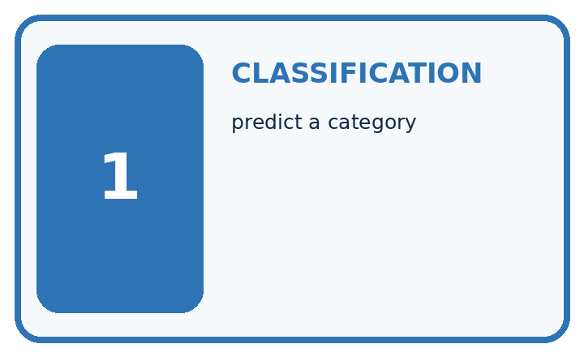
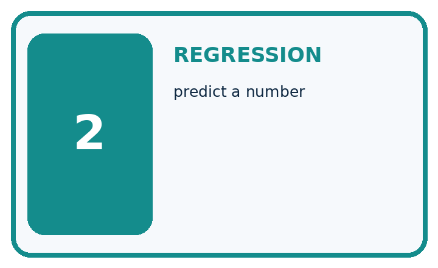
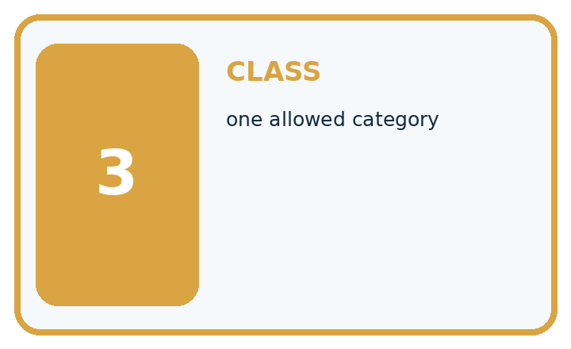
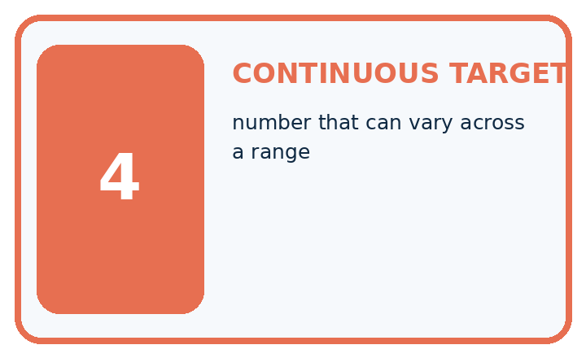
| Term | Precise meaning | My ML example |
|---|---|---|
| classification | predict a category | |
| regression | predict a number | |
| class | one allowed category | |
| continuous target | number that can vary across a range |
Repair the claim using a definition, calculation, or test record:
Words used in the closer explanation
| Word | Meaning |
|---|---|
| Classification | Predicting a category from a defined set |
| Regression | Estimating a numerical quantity with meaningful differences |
| Threshold | A boundary used to turn a value into a decision |
| Absolute error | The nonnegative distance between an estimate and an observation |
Student lesson · 6 of 17
Follow a worked example
WORKED EVIDENCE
Reason Step by Step
Predict first. Then check each step. A correct answer without visible evidence cannot be audited.
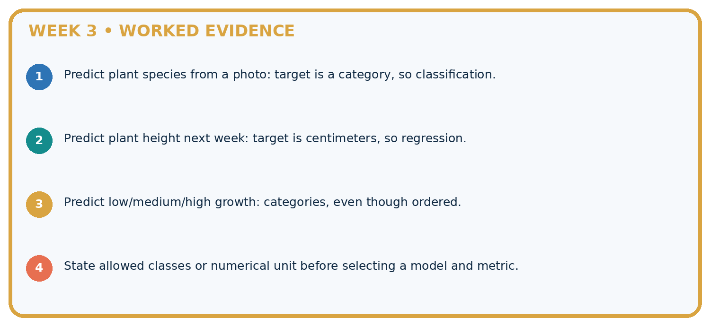
STEP 1 Predict plant species from a photo: target is a category, so classification.
STEP 2 Predict plant height next week: target is centimeters, so regression.
STEP 3 Predict low/medium/high growth: categories, even though ordered.
STEP 4 State allowed classes or numerical unit before selecting a model and metric.
Recalculate, retrace, or restate the evidence independently:
A closer explanation
The 14-minute trip has the largest duration error in our example, yet its slow category is correct. The 10-minute trip has only a one-minute error but the category is wrong. These checks answer different questions. Report 2 correct out of 3 category decisions separately from a mean absolute error of about 1.33 minutes. Do not compare a fraction directly with minutes.
Learn from the worked case
Cover the result before checking it. Say what is given, choose the procedure, and follow one step at a time. Then uncover the result and explain your first mismatch. Ask why a step is allowed, not only what number it produces.
A pictorial worked case: Classification or Regression?
Distinguish predicting growth height from predicting a growth category.
The facts we will use
Actual heights are [4, 7, 9] cm; estimates are [5, 6, 10] cm. Tall means strictly greater than 6 cm.
All inputs and outcomes in this worked example are invented classroom data; no real model run is claimed.


Read the picture one step at a time
Why this result follows
Read the picture in order. Estimated classes are short, short, tall: 2/3 correct. The arrows show which recorded input or intermediate result each decision uses. Explain the deciding step aloud before checking the changed case; pointing to the final answer alone does not show how it follows.
What this example does not establish
Regression error and category accuracy measure different targets; neither alone covers every use consequence.
Read the labelled picture: Did regression MAE improve when the boundary changed? Point to the relevant step in the picture, then write the changed result and the rule or evidence that supports it.
Change one thing: Change the category boundary to strictly greater than 7 cm. Predict the result before checking the explanation. What remains the same?
Student lesson · 7 of 17
Find and repair a mistake
ERROR DETECTIVE
Compare → Diagnose → Repair
Do not patch the answer. Find the earliest unsupported assumption, data problem, or experiment error.
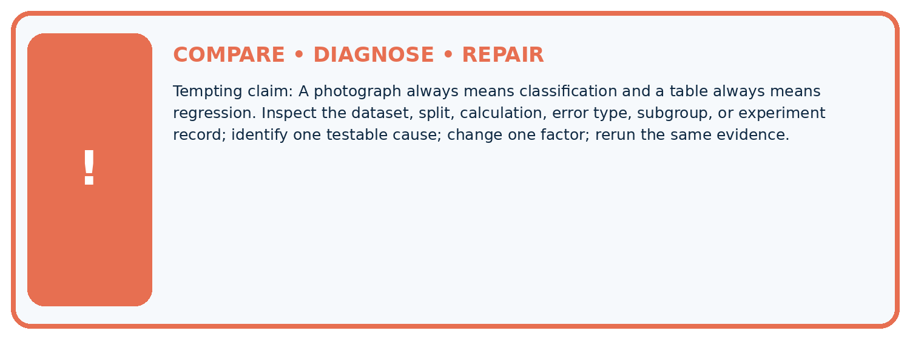
| Evidence record | Expected | Actual | Likely cause / next test |
|---|---|---|---|
| normal case | passes | ||
| boundary case | defined behavior | ||
| missing case | safe fallback | ||
| shifted case | measured limit |
Diagnose one cause and name the cleanest next experiment:
A closer explanation
A task specification should name the prediction moment, permitted inputs, target meaning and how predictions will be checked. Classification checks compare category decisions with observed categories. Regression checks measure numerical error with stated units. Later weeks examine additional metrics and why the consequences of different errors matter.
A correct category does not imply an exact quantity, and low numerical error does not guarantee every threshold decision is right. Three supplied examples establish only these calculations. They do not establish a trained model's reliability or show that a robot should act without review.
Student lesson · 8 of 17
Practise together
ML STUDIO
Specify Before You Run
A trustworthy result can be reproduced from the recorded data, code, settings, and evaluation rule.

Experiment record
QUESTION + intended use + success threshold
DATA version + grouped split + leakage check
CODE/preprocessing + features + model + settings + seed
METRICS + positive class + units + denominators
PREDICTIONS + errors + subgroup slices + limitations
HUMAN reviewer + release, revise, limit, or stop decision
Write the minimum record needed to reproduce today's result:
A closer explanation
A learner says that predicting route type is regression because indoor is encoded as 1 and outdoor as 2. The numbers are category codes: their difference does not measure travel time or another meaningful amount. Treat this as classification and judge the predicted category. Changing the codes must not change the meaning of the task.
Another learner puts durations into short and long bins, then claims to predict exact minutes. Binning creates a classification target and loses within-bin detail. If the user needs minutes, keep a quantity target and evaluate error in minutes. If the user needs a threshold decision, define the boundary and relevant consequences. Neither task is automatically better.
Practise with less help: Trace both checks
Use workbook W2 for the connected example “Classification and regression”. First fill the input and rule boxes. Try the middle steps before asking for a hint. After a hint, try the next step yourself.
| Plan | Do | Check |
|---|---|---|
| What is given? Which rule or procedure applies? | Record each intermediate step. | Does the result follow? What remains unknown? |
Explain your trace to a partner. Your partner points to one step to check. Swap roles on the next case. Each person writes their own explanation.
Check your reasoning
Use the worked case for Classification and regression. Proposed explanation: “Numbers always mean regression”. Decide whether this explanation is supported. Point to the step or supplied fact that decides; explain your repair if needed.
Answer on your own before discussion. If you are unsure, say which step you need help with.
Explain the picture
Did regression MAE improve when the boundary changed? Point to the relevant step in the picture, then write the changed result and the rule or evidence that supports it.
This is supported practice. Keep the separately named independent case for an attempt before feedback.
Student lesson · 9 of 17
Run the investigation
EVIDENCE LAB
Predict → Run → Calculate → Interpret
Keep the test conditions fixed, record every result, and change only one planned factor.
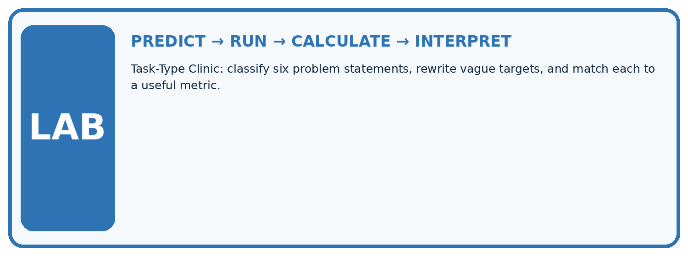
1. Write the hypothesis and expected evidence before running.
2. Task-Type Clinic: classify six problem statements, rewrite vague targets, and match each to a useful metric.
3. Run one normal, one boundary, one missing, and one shifted case.
4. Calculate the metric from raw counts or row-level errors.
5. Interpret what changed, what did not, and what remains unsafe or unknown.
| Case | Prediction | Actual | Calculation / evidence | Meaning / next test |
|---|---|---|---|---|
| Normal | ||||
| Boundary | ||||
| Missing | ||||
| Shifted |
Plan → try → check
Before trying: what do I expect, and why? While trying: which step could first go wrong? Afterwards: what did I actually observe, and what should change? Keep “not run” if you only traced the procedure.
Student lesson · 10 of 17
Build your understanding
MASTERY
From Knowing the Word to Owning the Idea
Move upward only when you can produce evidence without copying the example.

DEFINE Use all four terms precisely: classification, regression, class, continuous target.
CALCULATE Reproduce the worked evidence with units and denominator.
TRACE Explain the data, code or decision path.
DIAGNOSE A photograph always means classification and a table always means regression.
TRANSFER Solve a fresh dataset or model case.
IMPROVE Change one cause and rerun fixed evidence.
DEFEND State intended use, metric, limitation, and human responsibility.
Student lesson · 11 of 17
Connect your project
CUMULATIVE PROJECT
Responsible Plant Classifier
Every week adds one reviewable artifact to the same evidence-based capstone.
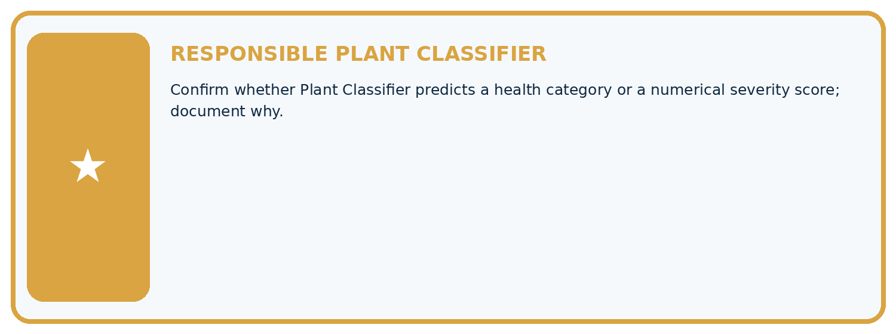
Which requirement or risk does this artifact address?
Which dataset, split, code, and metric version does it use?
What normal and shifted cases were tested?
What remains uncertain or weak?
What decision still belongs to a teacher or qualified human?
My evidence-linked project decision:
Evidence for your project
For your Responsible Plant Classifier, save the input, procedure, observed result and limitation of this check. Label this worked example as practice; use a different, previously unreviewed case when checking independent understanding.
Student lesson · 12 of 17
Show what you know
INDEPENDENT PROOF
Explain • Calculate • Transfer • Defend
Complete this with a fresh case after guided practice and compare it with the mastery criteria.
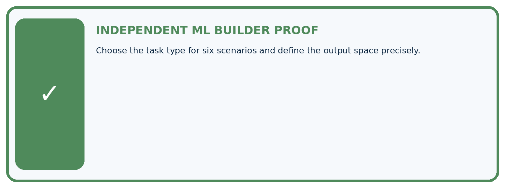
□ Define the task, feature/target roles, and intended-use boundary.
□ Show the calculation, code trace, or experiment record.
□ Test a normal case and one revealing boundary, missing, or shifted case.
□ Diagnose one failure without changing several factors at once.
□ Name a limitation, fairness concern, and the human-review action.
Independent evidence and defense:
My level: □ Not yet □ With one hint □ Independently □ I can teach and defend it
Student lesson · 13 of 17
Study a complete case
Week 3 Worked case
Use the supplied details to practise the weekly concept before attempting the independent question. This case extends the illustrated lesson.
The situation
Task A predicts healthy/spotted; B predicts next week's height in cm.
The question
Choose task and output types.
Worked explanation
A is classification with categorical output; B is regression with numeric output and units. Numeric class codes do not make classification regression.
Explain it in your own words
Which detail supports the answer, and why does it matter?
Trace the supplied case visually
Choose the task by the meaning of the output
| Evidence or stage | Value or result |
|---|---|
| Healthy or spotted | Classification, category |
| Height next week | Regression, numeric cm |
| Class code 0 or 1 | Still a category |
Task A predicts healthy/spotted; B predicts next week's height in cm.
Choose task and output types.
A is classification with categorical output; B is regression with numeric output and units. Numeric class codes do not make classification regression.
Student lesson · 14 of 17
Try a new case independently
Independent case: Compare new evidence independently
For three fictional print jobs, actual completion times are 4, 5 and 9 minutes; estimates are 6, 5 and 8 minutes in matching order. Slow means more than 5 minutes. Write actual and predicted category lists, count correct categories, calculate each absolute error and the mean error in minutes. State what each result measures.
Attempt this case before feedback. Record any help. Earlier examples below are further practice; a case already practised with feedback cannot establish fresh transfer.
Week 3 Independent application
Close the worked explanation. Apply the idea to this different question without copying.
Task A predicts whether a plant is fern or grass. Task B predicts its height in centimetres. Which is classification and which is regression?
My answer, with a trace, calculation or supporting evidence
Create and test
Change one relevant detail. Predict the result before testing. Include a boundary or missing-information case when it helps reveal a limit.
My changed input and expected result
Connect to your project
Confirm whether Plant Classifier predicts a health category or a numerical severity score; document why.
The evidence I will keep
Your teacher has the independent answer and scoring criteria. Complete the matching workbook week to keep your practice evidence together.
Transfer practice from the original programme
System A predicts class codes 0=oak,1=maple. System B predicts leaf area in cm². Name the task types and explain why code 1 is not 'one more species' than code 0.
Use feedback to improve
Attempt the independent case before hints. Record whether you worked alone, used a hint or followed a model. After feedback, fix the first unsupported step and explain why it changed. A later check uses a changed case, not a copied answer.
Student lesson · 15 of 17
Your lesson route
Start with this question: Distinguish predicting growth height from predicting a growth category.
| By the end, I can | How I will show it |
|---|---|
| Identify a task from the meaning of its target | Explain the deciding step, show a trace or test, and state one limit. |
| Distinguish category agreement from numerical error | Explain the deciding step, show a trace or test, and state one limit. |
| Specify outputs and checks that match a user need | Explain the deciding step, show a trace or test, and state one limit. |
Remember → watch and explain → try with help → investigate → try independently → keep project evidence. Your teacher may spread this lesson across several classes.
Keep your first prediction. Compare it with what the evidence shows and explain any change.
Student lesson · 16 of 17
Finish and return
Close your notes. Explain this goal in your own words: Identify a task from the meaning of its target
If you are unsure, return to the worked picture and explain one arrow. If you are ready, change an input or assumption and justify your prediction.
Save your workbook evidence. At the next review, try a different case before opening your old answer.
Student lesson · 17 of 17
Supported practice, repair and portfolio
Use this supported practice once, in the browser or on paper. Keep the reserved independent assessment for a separate first attempt before teacher feedback.
Distinguish predicting growth height from predicting a growth category.
Practice 1: explain the deciding evidence
Which labelled step matches this detail? Estimated classes are short, short, tall: 2/3 correct.
1. Actual categories
2. Regression errors
3. Predicted categories
Hint if needed: Read the steps in the pictorial case. Match the supplied detail to the stage that performs or records it.
After your attempt, compare with the supported explanation: Predicted categories Estimated classes are short, short, tall: 2/3 correct. Read the picture in order. Estimated classes are short, short, tall: 2/3 correct. The arrows show which recorded input or intermediate result each decision uses. Explain the deciding step aloud before checking the changed case; pointing to the final answer alone does not show how it follows.
Practice 2: explain the deciding evidence
Changed-case practice: Change the category boundary to strictly greater than 7 cm. Which conclusion is supported by the supplied facts?
1. This one example guarantees correct results for every future input.
2. We can decide the result without examining the changed input or the procedure.
3. Actual and estimated categories both become short, short, tall: 3/3 correct.
Hint if needed: Use the changed condition and the deciding step in the pictorial trace. The answer must say what follows from those facts.
After your attempt, compare with the supported explanation: Actual and estimated categories both become short, short, tall: 3/3 correct. The numerical estimates did not improve; the decision definition changed.
Repair a missing building block
Review Features, Labels, Targets (ai-4/2). Goal: Separate prediction inputs from observed targets. Short practice: Why can a historical table contain a field that is an invalid input? Point to the relevant step in the picture, then write the changed result and the rule or evidence that supports it.. Return to this week and explain what you changed.
Predict, run and debug
The browser lab lets you edit the supported Python examples already included in this lesson. Predict first, run, inspect the actual output or error, change one input, then run again. Keep code, predictions, actual results and a reasoned revision together. On paper, label your result as a trace rather than an execution.
Keep your completed work
Use Download completed work in the hosted lesson to export your answers, reflections, practice feedback and code-run evidence. Open the HTML copy to read or print it. Drafts stay in this browser when storage is available; clear drafts on a shared device.